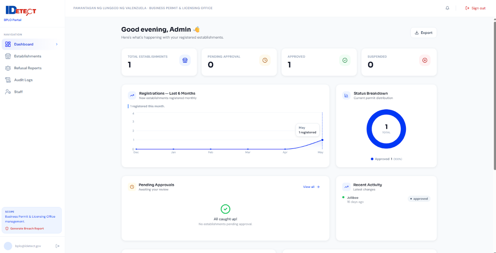
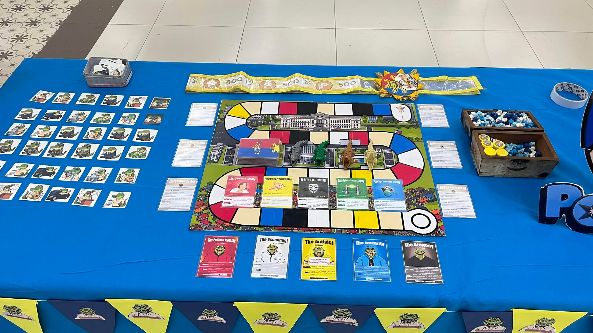
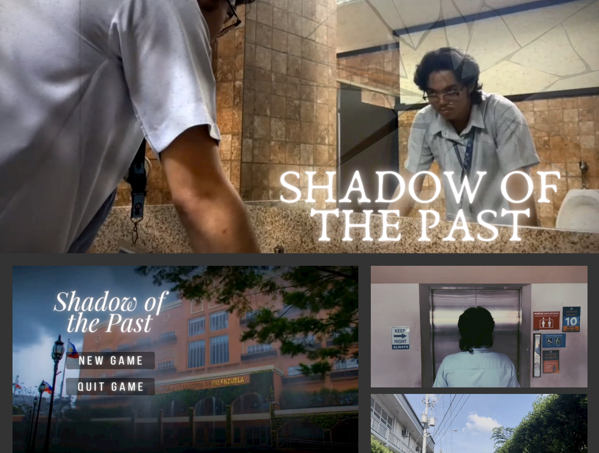
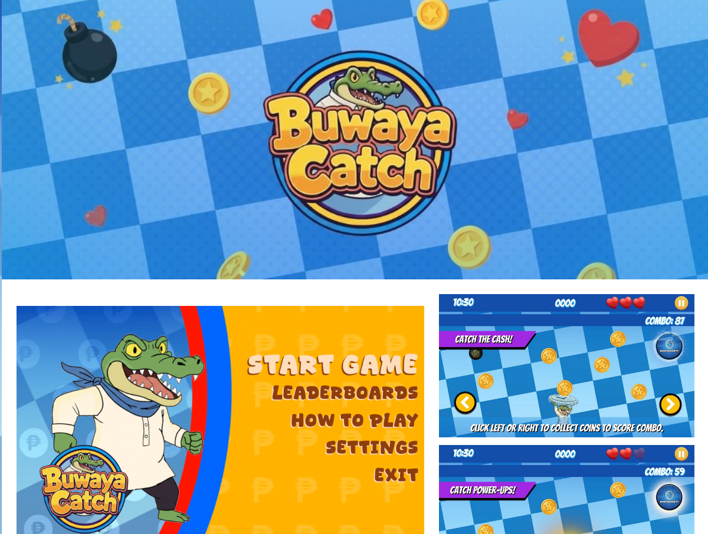
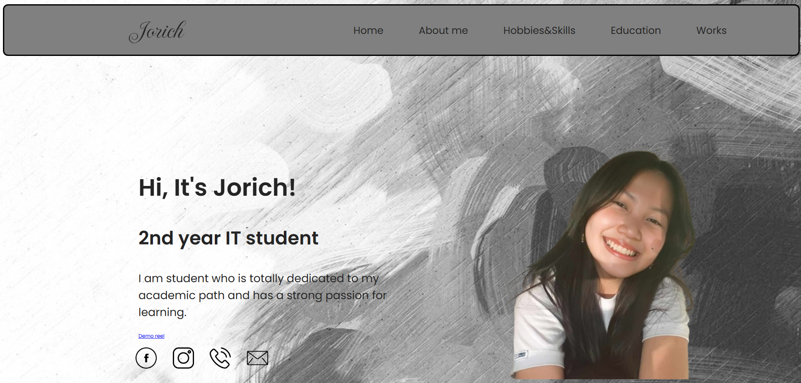
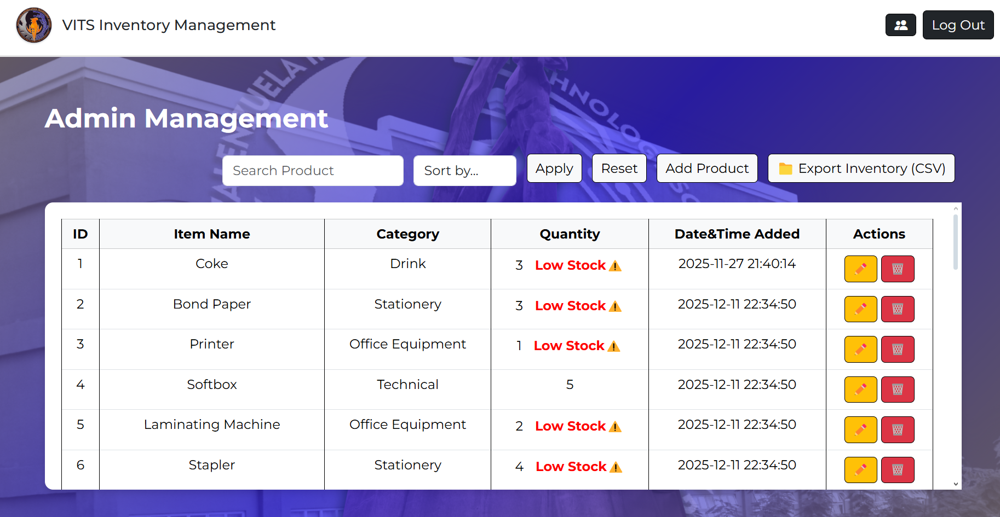

03
Projects
My Work

Project Manager
Piso Politiko – Hybrid Game
Board-digital game where players compete as politicians managing Coins and Reputation. Managed timelines via Jira. 2025.
Watch ad video ↗
Project Manager
Shadow of the Past – Narrative Game
Psychological game following a student revisiting his flood-stricken school, confronting trauma through player choices. 2025.
Play on itch.io ↗
Project Manager
Buwaya Catch – Arcade Strategy
Arcade game where players control a corrupt politician catching public funds while dodging accountability. 3 unique characters. 2025.
Play on itch.io ↗
Individual
Personal Portfolio Website
Built from scratch using HTML, CSS, and JS. 2025.
Watch demo ↗
Group Project
Maricopa Restaurant Site & Prediction
Restaurant website + data-driven daily serving prediction module. 2025.
Watch demo ↗
Group Project
ARTA Customer Satisfaction System
Flutter & Supabase app automating ARTA surveys for Valenzuela City. 2025.
View presentation ↗
Group Project
VITS Inventory Management System
Designed front-end dashboard: product listings, stock controls, responsive admin. 2025.
View Figma ↗